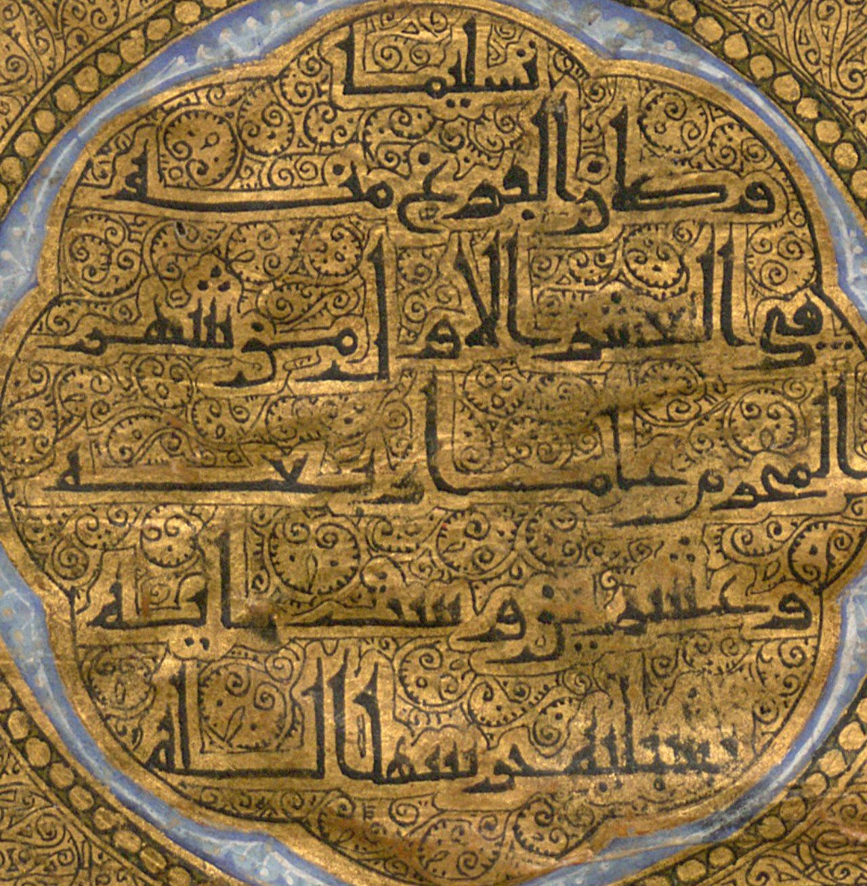
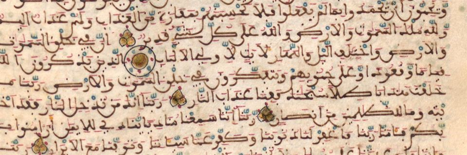
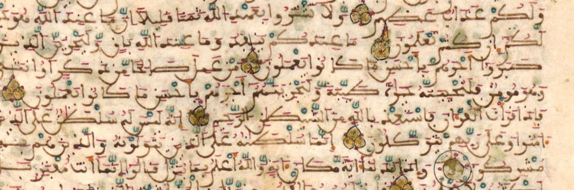

باقٍتاممرقمن كاملاً
- الناسخ
- غير مذكور
- المكان
- إشبيلية، كما في الخاتمة
- اليوم
- ميونخ، مكتبة الدولة البافارية، Cod.arab. 1
- الهيئة
- رقّ؛ 130 ورقة؛ 22 × 20 سم؛ 27 سطراً بقلم أندلسي دقيق
من المصاحف الأندلسية القليلة الباقية المؤرخة، نُسخ في إشبيلية وهي حاضرة الموحدين في الأندلس، قبل خروجهم منها بقليل. وهو تام في مجلد واحد، وخاتمته في شمسة مذهبة بالخط الكوفي.
التاريخ والمكان صريحان، لكن الخاتمة لا تسمي الناسخ ولا من كُتب له.

الخاتمة في الشمسة المذهبة (الورقتان 264–265 من المرقمن)
كمل المصحف المبارك بعون الله وحسن عونه، وصلى الله على سيدنا محمد وعلى آله وسلّم تسليماً، وكان الفراغ منه في العشر الأول من شهر المحرم عام أربعة وعشرين وستمائة بمدينة إشبيلية حرسها الله.
قراءتنا من صورتي الورقتين: يبدأ النص في الشريط المذهب آخر سورة الناس، ويتم في الشمسة. والعشر الأول من المحرم 624هـ تقابل نحو 22–31 ديسمبر 1226م.
رحلة المصحف من إشبيلية إلى ميونخ
624هـ / 1226منُسخ في إشبيلية الموحدية
بعد سقوط إشبيليةحمله مهاجرون أندلسيون إلى شمال أفريقيا، بحسب وصف المكتبة
942هـ / 1535مأُخذ في حملة شارل الخامس على تونس
قبل 1557مصار إلى المستشرق يوهان ألبرخت فيدمانشتتر
1558مدخل مكتبة البلاط في ميونخ
عينات من الكتابة عن قرب (4)اضغط للتكبير ←


